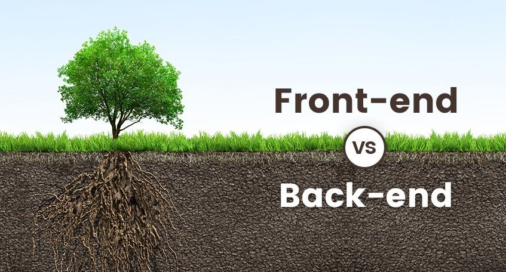

O desenvolvimento web compreende a criação de sistemas que são disponibilizados através da internet, como os sites, plataformas, redes sociais e e-commerces. Desse modo, o código é hospedado em um servidor e requisitado pelo navegador quando uma pessoa usuária realiza o acesso.
O que é programação?
Podemos definir programação como o ato de escrever instruções para que máquinas executem uma determinada função ou várias funções encadeadas. Ou seja, a partir de um conjunto de códigos, as pessoas se comunicam com os computadores e os configuram para a execução de alguma tarefa específica.
Quando paramos para analisar, os computadores não são de fato inteligentes, eles apenas executam processos com uma velocidade extremamente maior do que a nossa. Por isso, precisamos definir regras bem detalhadas e instruí-los cuidadosamente para que realizem algum trabalho, que pode ser calcular números como em uma calculadora ou simplesmente exibir um nome na tela.
A programação lida com os diversos componentes do computador: o processador, a memória, os elementos de entrada e saída, etc. Os mesmos componentes serão manipulados, seja para desenvolver um sistema de streaming de música ou para criar um pequeno programa que mostra um número digitado.
Se precisássemos que um computador calculasse dois números, utilizaríamos algumas instruções específicas para esse fim. Por exemplo: em uma instrução, guardamos um número na memória do computador; em outra, salvamos outro número. Por fim, realizamos a soma com mais uma instrução.
Essas regras escritas ajudam as pessoas a dialogarem com as máquinas na linguagem delas. Contudo, isso é feito de uma maneira inteligente: as pessoas programadoras não precisam lidar com os códigos binários que os computadores entendem, mas com linguagens baseadas no idioma humano. Essas são chamadas linguagens de programação e são responsáveis por permitir essa interação.
Qual a importância da programação?
Como já falamos, desde os primórdios, a programação tinha um objetivo de trazer maior comodidade à vida humana com automação. O foco era tornar as tarefas mais simples e menos demoradas.
Considere, por exemplo, a escrita e compare com a digitação em sistemas processadores de texto como o Microsoft Word. Antes da programação, a escrita era analógica. Tínhamos que pegar uma folha de papel, uma caneta e começar a escrever.
O processo envolvia ter que desenhar as letras, se preocupar com legibilidade, gerenciar o espaço no papel, tentar não errar e focar no conteúdo.
Com o Word, atualmente, você não precisa se importar com espaço, letras, legibilidade, ou com erros. Tudo isso é administrado pelo programa. Dessa forma, a única preocupação de quem escreve é com o conteúdo e com a mensagem. Assim, as pessoas conseguem escrever melhor e mais rapidamente.
Isso ocorre por conta da programação. A ciência de dar instruções aos computadores permitiu criar sistemas processadores que automatizam a escrita e a simplificam.

O que faz um Programador?
Uma pessoa programadora possui domínio da lógica e das tecnologias que serão utilizadas para desenvolver aplicações tecnológicas. Em seu dia a dia, será responsável por criar instruções que serão executadas por dispositivos tecnológicos a fim de realizarem uma ação.
Além do código, a pessoa programadora também participa de reuniões com as partes interessadas e com a área de design para validar regras e negociar entregas. Dependendo do nível de experiência, também pode ser encarregada de liderar equipes e definir a arquitetura de projetos.
Quais as principais áreas de Programação?
Desenvolvimento Web
Desenvolvimento Web
Desenvolvimento Mobile
Esta é a vertente da programação responsável por criar aplicativos móveis. Os aplicativos criados podem ser específicos para um sistema operacional, Android ou iOS, ou multiplataforma, em que uma mesma base de código é utilizada em ambos os sistemas.
Desenvolvimento Mobile
Desenvolvimento de Jogos
Trata-se da criação da lógica de um jogo e a integração com a interface gráfica. Os jogos criados podem ser distribuídos para plataformas focadas em smartphones, computadores e videogames.
Desenvolvimento de Jogos
Desenvolvimento Desktop
O desenvolvimento desktop se refere a softwares que precisam ser instalados em um computador. Um sistema operacional, editor de texto e ferramentas de edição de imagens e vídeos são exemplos desses sistemas.
Desenvolvimento Desktop
Quais as Soft Skills necessárias para ser um Programador?
As soft skills são características que são adquiridas através de experiências pessoais ao longo da vida. Apesar de não poderem ser representadas em um curso, elas podem ser aprimoradas com dicas. Por isso, veja algumas habilidades das quais você pode se atentar:
Programador Júnior, Pleno e Sênior: como cada um atua?
Júnior, pleno e sênior são níveis usados no mundo da programação para indicar o grau de experiência de uma pessoa na área. Algumas classificações consideram júnior a pessoa iniciante no ramo, pleno aquela que possui entre 3 a 5 anos de experiência e sênior a que já está no mercado há mais de 5 anos.
Entretanto, é válido ressaltar que os anos de mercado não são uma regra para definir o grau de experiência, pois isso varia de acordo com a profundidade de conhecimento que uma pessoa possui. A seguir, vejamos quais as principais características de cada nível.
Júnior
É considerada uma pessoa programadora júnior aquela que tem pouca experiência prática na área. Dessa forma, em um projeto, ela será responsável por desenvolver tarefas e corrigir bugs de menor complexidade e vai necessitar de acompanhamento de pessoas mais experientes.
pleno
No nível pleno se enquadram as pessoas que já tem experiência em alguns projetos. Desse modo, elas têm maior autonomia para desenvolver código, configurar ambientes de desenvolvimento e possuem visão do negócio em que o sistema está inserido.
Sênior
São pessoas com larga experiência em programação. Nesse nível, a pessoa programadora é capaz de liderar equipes e orientar projetos, além de definir arquiteturas, resolver erros complexos e realizar negociações com as partes interessadas.
Front-end e back-end
Front-end e back-end são terminologias para a programação web. O front corresponde ao desenvolvimento realizado no lado de clientes, isto é, na parte em que as alterações são visíveis para a pessoa usuária. Os botões de um menu, as interações do mouse e pop-ups são exemplos de mudanças de visual, portanto, específicas do lado de clientes.
O back-end cuida das operações do lado do servidor, que entrega os dados a clientes por meio da internet. Manipulações de bancos de dados, validações de formulários e outras funções mais complexas são típicas desse lado.
O front-end é a parte que todo mundo vê. Em uma analogia com um programa de televisão, é o que está à mostra e o que é filmado pela câmera. O back-end então seria o sustentáculo ou, na TV, o conjunto de atividades que acontecem nos bastidores — como as pessoas que configuram as câmeras.